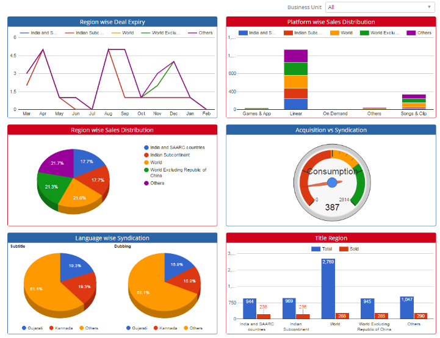


	<section>
		<article>
			<h2>Dashboard (Graphical)<span></span></h2>
			<div>
				<p></p>

				<p>This report is useful for business users to get overview of what is the trend of acquisition and syndication in system.</p>

				<div class="triangle-border top">				
					
				</div>

				<p><b>Business Unit</b> - If user is assigned to multiple business units, then they will be displayed in drop down. Based on business unit selection, graphs will be loaded.</p>

				<p><b>Region wise Deal Expiry</b> - This graph shows total count of deals which are getting expired in respective month for respective regions.</p>
				 
				<p><b>Platform wise Sales Distribution</b> - This graph shows total count of distinct Titles which has been syndicated on respective platform for respective regions.</p>

				<p><b>Region wise Sales Distribution</b> - This graph shows total count of title which has been syndicated for respective regions.</p>

				<p><b>Acquisition vs Syndication</b> - This graph shows total count of Titles acquired vs total count of Titles syndicated.</p>

				<p><b>Language wise Syndication</b> - This graph shows total count of Titles which has been syndicated for respective Subtitling and dubbing languages.</p>

				<p><b>Title Region</b> - This graph shows total count of Titles acquired and total count of Title syndicated for respected regions.</p>

			</div>
		</article>
	</section>